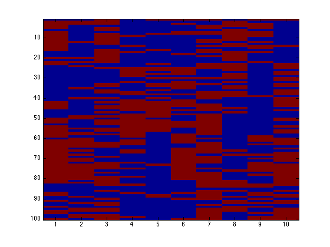
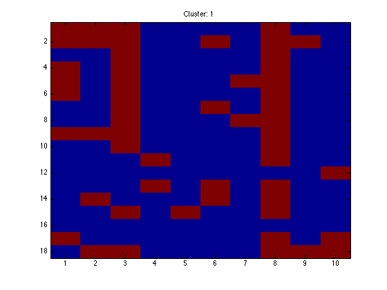
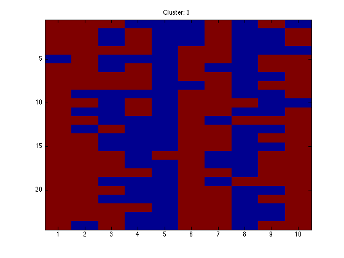
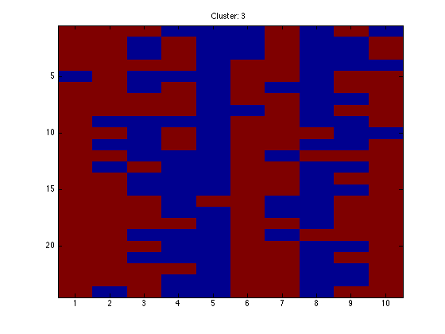
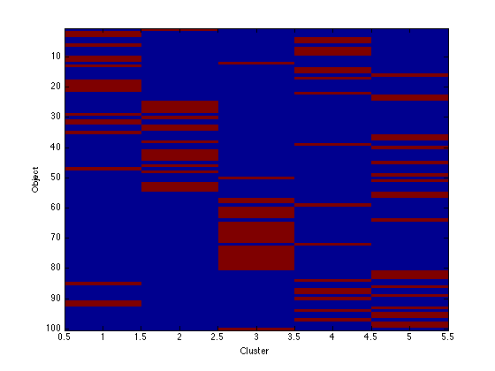
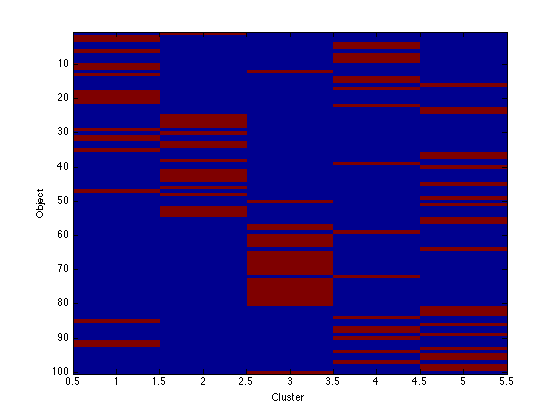

Contents
binmix.m
From A First Course in Machine Learning, Chapter 6. Simon Rogers, 01/11/11 [simon.rogers@glasgow.ac.uk] Mixture model for binary data
clear all;close all;
Generate the data
K = 5; priors = repmat(1/K,1,K); D = 10; %Number of dimensions probs = rand(K,D); % The binary probabilities N = 100; % The number of data objects t = []; for n = 1:N % Which component? pos = find(rand<cumsum(priors)); t(n,1) = pos(1); for d = 1:D X(n,d) = (rand<probs(t(n,1),d)); end end % Sort the data for visualisation [t I] = sort(t); X = X(I,:);
Image the data
figure(1);hold off
imagesc(X);
 Run the mixture
K = 5; % Try changing this B = []; B(1) = -inf; pkd = rand(K,D); pri = repmat(1/K,1,K); converged = 0; it = 0; tol = 1e-2; MaxIts = 100; alpha = 2;beta = 2; % MAP Smoothing parameters - set to 1 to turn off smoothing (may cause numerical instability) while 1 it = it + 1; % Update q temp = zeros(N,K); for k = 1:K temp(:,k) = sum(X.*log(repmat(pkd(k,:),N,1)) + ... (1-X).*log(repmat(1-pkd(k,:),N,1)),2); end temp = temp + repmat(log(pri),N,1); % Compute B if it>1 B(it) = sum(sum(q.*log(repmat(priors,N,1)))) + ... sum(sum(q.*temp)) - ... sum(sum(q.*log(q))); % Prior contributions (due to smoothing) B(it) = B(it) + K*D*gammaln(alpha+beta) - ... K*D*gammaln(alpha) - K*D*gammaln(beta); B(it) + B(it) + (alpha-1)*sum(sum(log(pkd))) + ... (beta - 1)*sum(sum(log(1-pkd))); if abs(B(it)-B(it-1))<tol converged = 1; end end if converged == 1 || it>MaxIts break end q = exp(temp - repmat(max(temp,[],2),1,K)); q = q./repmat(sum(q,2),1,K); % Update priors pri = mean(q,1); % Update probabilites for k = 1:K pkd(k,:) = (alpha - 1 + sum(repmat(q(:,k),1,D).*X,1))./(alpha + beta - 2 + sum(q(:,k))); end end
Plot the bound
figure(1); hold off plot(B) xlabel('Iterations'); ylabel('Bound');

Visualise the clusters
assi = (q==repmat(max(q,[],2),1,K));
for k = 1:K
figure(k);hold off imagesc(X(assi(:,k),:)); ti = sprintf('Cluster: %g',k); title(ti);
 
 

end
Image the q values
Note that because the data are in order, we should see clear block structure. It won't be perfect: our clusters were randomly generated so there is no gaurantee that they are particularly different.
figure(1);hold off imagesc(q); xlabel('Cluster'); ylabel('Object'); figure(2);hold off imagesc(assi); xlabel('Cluster'); ylabel('Object');
 
